Spectroscopy-centred methods, home-built instruments and data-driven algorithms that decode dynamic processes at surfaces and interfaces — from single nanoparticles to working batteries and living systems.
Direction 01
Operando / In-situ Characterization Methods
Centred on spectroscopic methods, we probe electrochemical interfaces to decode dynamic interfacial processes in catalysis, energy conversion and surface science across multiple scales.
1.1Tip-enhanced Raman spectroscopy (TERS)
TERS is a powerful nanospectroscopy technique that combines scanning probe microscopy (SPM) with plasmon-enhanced Raman spectroscopy (PERS): SPM provides topography while PERS simultaneously provides chemical information of the sample. We develop highly sensitive and easy-to-use TERS instruments working in air and liquid, and especially under electrochemical conditions (electrochemical TERS, EC-TERS).
We also design and fabricate highly active gold or silver TERS tips (for STM and AFM) via electrochemical etching, electrochemical deposition, physical vacuum deposition and focused-ion-beam (FIB) nanofabrication.
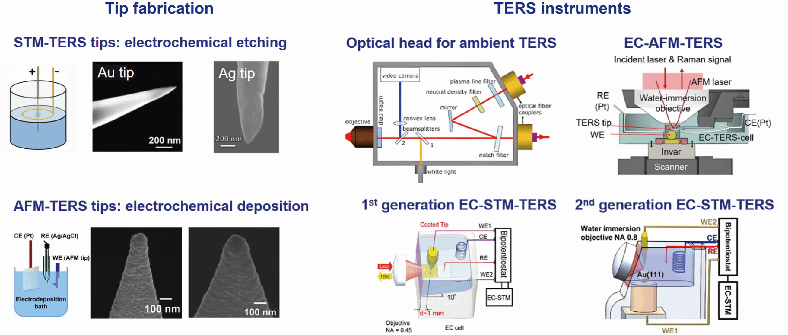
1.2In-situ / Operando Raman
Centred on in-situ/operando electrochemical Raman spectroscopy, we aim to establish precise structure–activity relationships that bridge macroscopic electrochemical performance and molecular-level mechanisms. By coupling vibrational fingerprints with classical electrochemical methods (CV, LSV, EIS, chronoamperometry), we capture key transient intermediates in dynamic electrochemical systems.
Operando / in-situ platforms for electrocatalysis
For diverse electrocatalytic reactions (ORR, CORR, CO2RR, …) we continuously develop adaptable operando Raman techniques, including modular Raman cells integrated with continuous-flow cells, rotating disk electrode (RDE) setups and oxygen-free systems. To obtain vibrational fingerprints with high temporal resolution, we developed transient electrochemical SERS (EC-SERS) to capture the dynamic evolution of reactive intermediates.
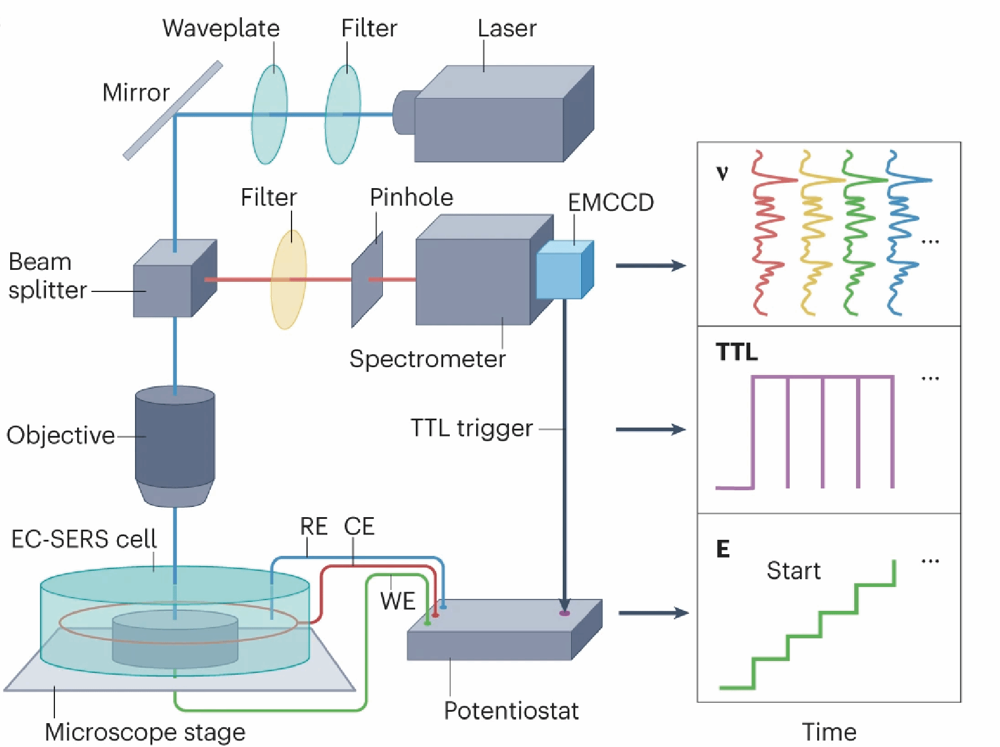
Spectroscopic tools for next-generation batteries
For energy-storage systems we design custom Raman cells compatible with inorganic and polymer solid electrolytes to investigate solid–solid interfacial evolution, and we are developing a new line-scan Raman spectrometer for integration with a glovebox.
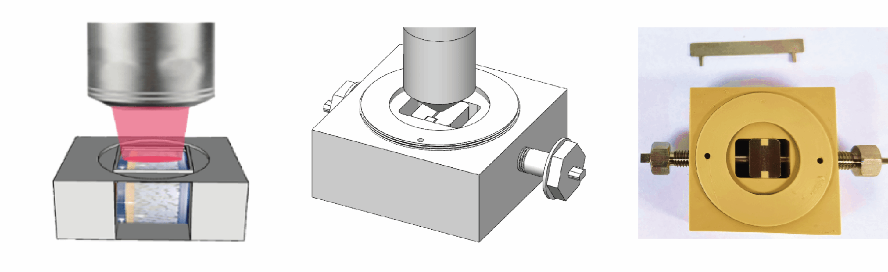
1.3Single-particle characterization
Characterizing electrocatalysts and battery materials at the single-particle level is essential for obtaining their intrinsic electrochemical properties. For nanocrystal catalysts we use dark-field spectroscopy for in-situ characterization of individual metal nanoparticles; for battery materials we integrate single-particle electrochemistry with Raman spectroscopy to reveal the intrinsic structure–activity relationship of individual active particles in commercial batteries.
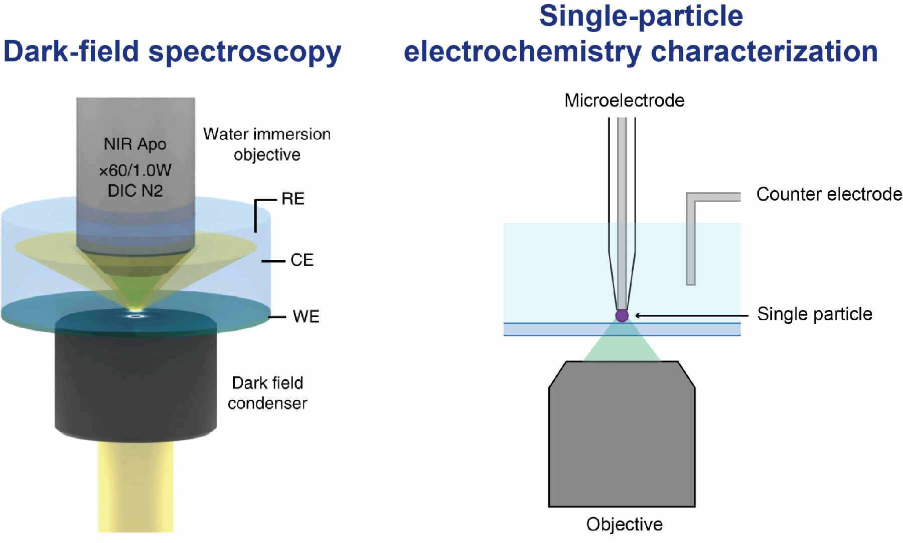
Elucidating the fundamental origins of SERS enhancement also reveals the chemical and physical properties of metallic nanostructures. Combining theoretical calculation (DDA, FDTD, FEM) with experiment, we precisely fabricate high-performance SERS substrates — mainly via focused ion beam (FIB) and holographic lithography.
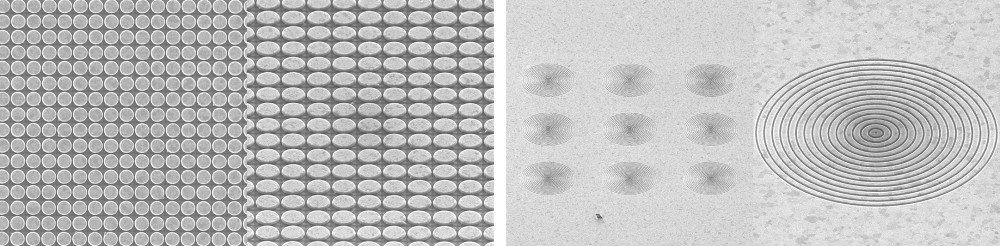
Direction 02
Research Systems
Our methods are applied to catalytic surfaces and interfaces, solid-state batteries and biological molecules.
2.1Surface and interface
In heterogeneous catalysis, surfaces and interfaces serve as the active sites where adsorption and transformations occur. Using in-situ EC-SERS, we reveal surface reconstruction of core–shell catalysts during electrocatalysis and tailor electrolyte–catalyst synergy to enhance selectivity. From the electrolyte perspective, we investigate how cations and anions modulate the microenvironment of the electrochemical interface.
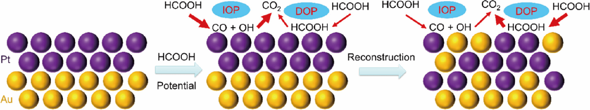
To characterize surfaces at the nanoscale, TERS is used to probe the electronic properties of different sites of unique catalysts and novel (2D) materials.
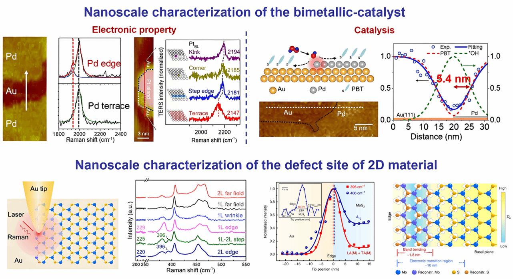
For in-situ characterization of the solid–liquid interface, we apply EC-TERS to probe electrochemical and photo-electrochemical reactions on model systems and the nano-heterogeneity of the electrochemical interface.
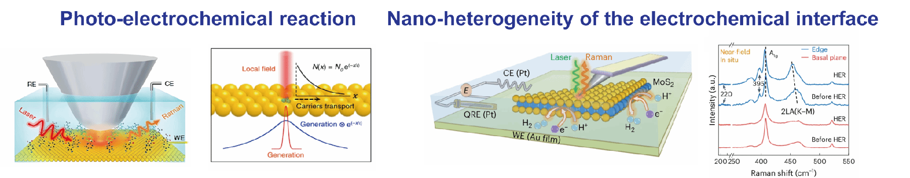
2.2Battery
Efficient lithium-ion transport is critical for solid-state batteries. We study ion-transport dynamics within polymer electrolytes, and trace the in-situ polymerization of polymer electrolytes by Raman spectroscopy.
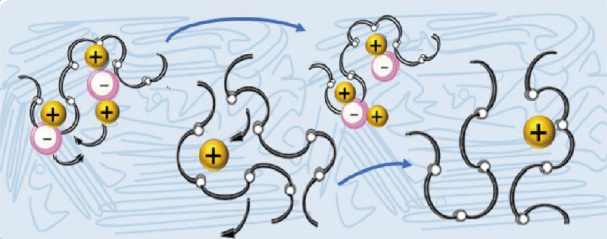
2.3Biological SERS
We develop SERS methodology for sensitive detection of proteins, DNA/RNA, drugs and more, aided by rationally designed SERS substrates.
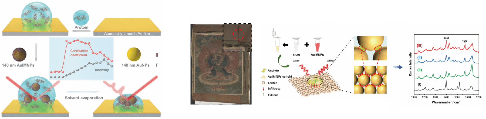
To decode the structure of biological molecules from Raman spectra, we develop algorithms that reconstruct molecular and biomolecular structures from SERS spectra, towards a clear spectrum–structure correlation.
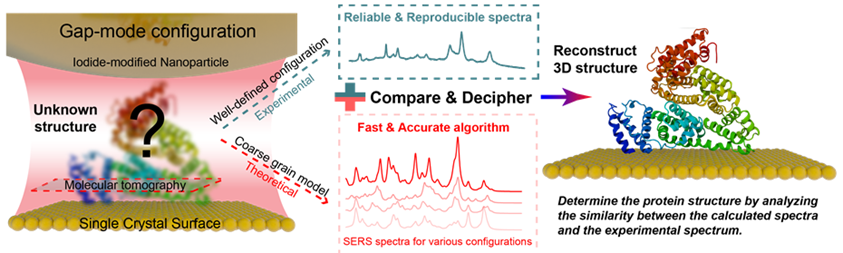
Direction 03
Instrumentation
Building on our long experience with in-situ spectro-electrochemical instruments, we optimize commercial systems and build our own — and translate them into teaching instruments for undergraduate and graduate courses.
3.1Potentiostat for electrochemical teaching
A user-friendly interface, excellent safety and built-in data recording and analysis help students understand electrochemical principles. The teaching potentiostat has been delivered, and the transition to a research-grade potentiostat is ongoing.
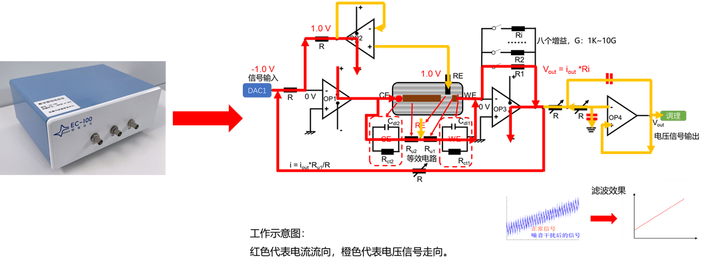
3.2Educational multifunctional Raman spectrometer
Sensitive detection and hands-on learning for classroom and research use, adaptable to both solid and liquid samples.
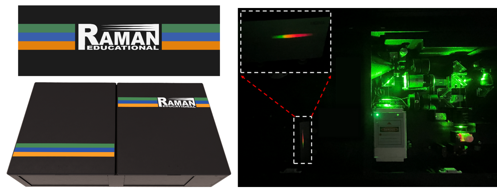
3.3Home-made wide-field Raman imaging
Multiplexed, flat-top illumination wide-field Raman imaging with high temporal resolution and spatiotemporal synchronization, for understanding electrochemical interface structure and reaction kinetics.
3.4Ongoing: AFM for TERS
Atomic force microscopy scans a probe across the sample and measures tip–sample interaction forces (van der Waals, electrostatic, magnetic). Cantilever deflection, read out by a reflected laser beam, yields a topographic map of the surface.
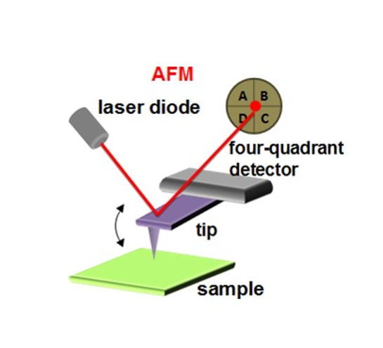
We are developing an AFM for TERS operating in amplitude-modulation mode: while imaging, the tip–sample distance is controlled to obtain near-field Raman signals for TERS mapping.
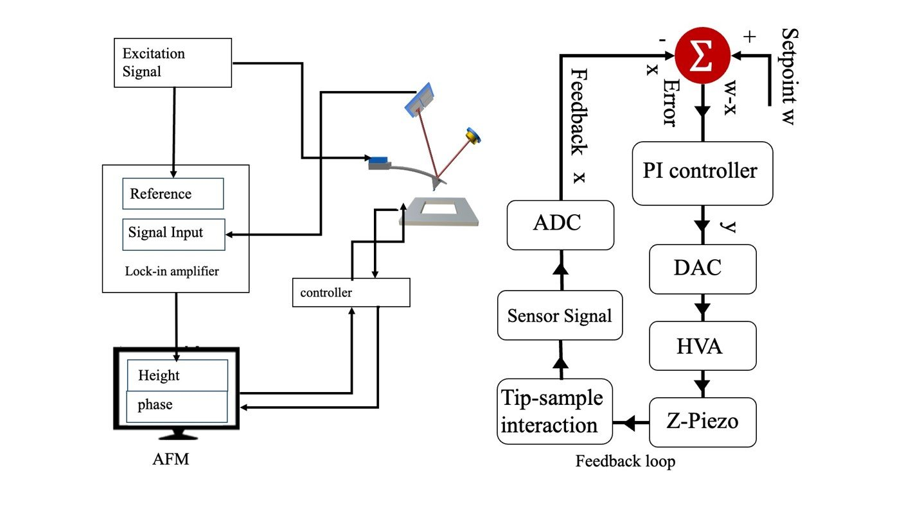
3.5EC-TERS 4.0
Building on three generations of EC-TERS developed so far, we are carrying out the research and development of EC-TERS 4.0.
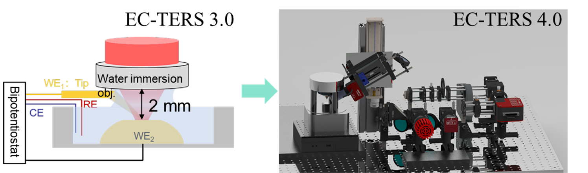
Direction 04
Intelligent Algorithms & Instruments
Deep learning has become a powerful tool for data mining, causal analysis and decision optimization. We use it to extract information from large-scale spectral data — from peak assignment to rapid bacterial detection and disease diagnosis.
4.1Vibrational spectra ↔ molecular structure
Vibrational spectra carry rich molecular fingerprints, but their interpretation requires expert knowledge and peak assignments are not always consistent. Traditional approaches rely on costly theoretical calculations (e.g. DFT). We use deep learning to model molecules and vibrational spectra jointly, enabling structure-based spectral prediction and spectrum-based molecular generation.
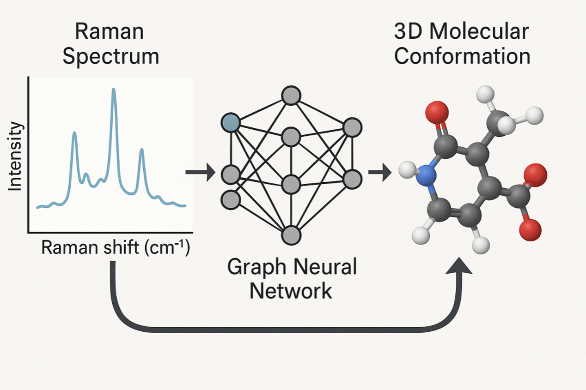
4.2Biological Raman feature extraction
Raman spectroscopy suits in-situ monitoring of life processes, yet biological spectra suffer from weak signals, interference and poor reproducibility, and models usually must be rebuilt for each dataset. We combine deep learning with pre-training strategies to build general spectral models that can be fine-tuned across datasets, reducing the cost of data acquisition and modelling.
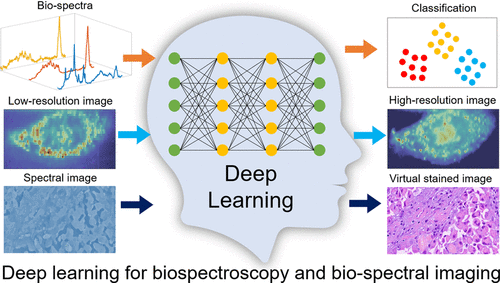
4.3Spatio-temporal resolution enhancement
There is a trade-off between spectral quality and acquisition speed. Our algorithms — including CNN-based super-resolution reconstruction, PEER, CLRMA and Signal2Signal — reconstruct high-quality signals from fast, low-quality acquisitions, greatly improving the spatial and temporal resolution of existing instruments.
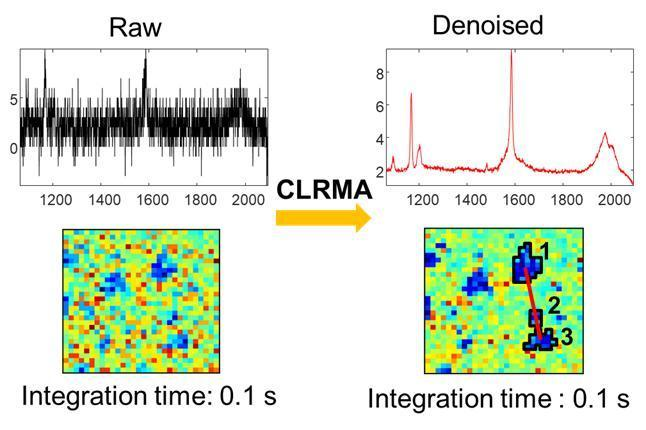
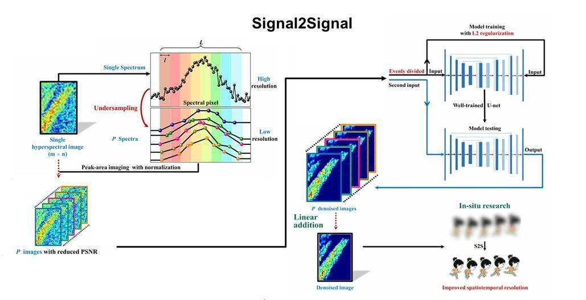
4.4Raman Cloud — algorithms as a service
To shorten the feedback loop and lower the barrier to use, we built Raman Cloud, a web service for interactive processing of spectra and images. We plan to recommend optimal processing strategies with deep learning and eventually embed these capabilities into instruments with autonomous analysis and decision-making.